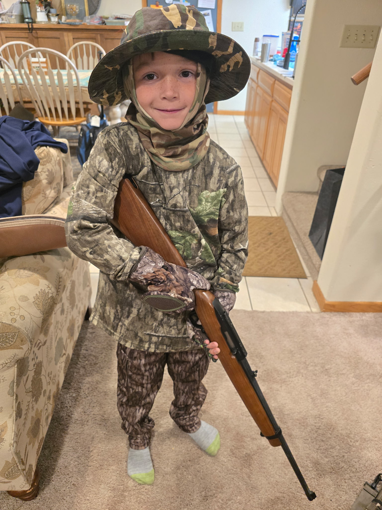

Jackson
Jackson is my seven year old younger brother. My family adopted him when he was just a newborn baby and he has brought a bright energy into all of our lives. He is a lively young boy with an effervescent personality which has melded into our family in a fantastic way. Because all of his older siblings are adults, he has developed quite the personality having been heavily influenced by my two brothers, my two sisters, and I. Even with that older sibling influence, Jackson already had a lot of unique traits that make him stand out as a person.
Jackson loves playing outside. He has a lot of energy and likes to spend it going on adventures in the woods outside his home. He also loves playing soccer as well as hockey (when he’s able to!) He really likes anything to do with the U.S. army and thinks soldiers are the coolest people in the world. He likes eating steak (probably because that’s his big brother’s favorite food) and his favorite subject in school is science. He loves reading, and he especially loves when Mom reads him good stories before bed, such as Little House on the Prairie. He enjoys cake and likes when people play guitar. Jackson has a really big heart and loves talking to people regardless of their age. Whether it be his friends at school, his older siblings, or random people out at a restaurant, he loves putting himself out there. He is a dynamic, outgoing, and highly energetic young person and I love hanging out with him. I’m excited for what he’s going to become as he grows up!
